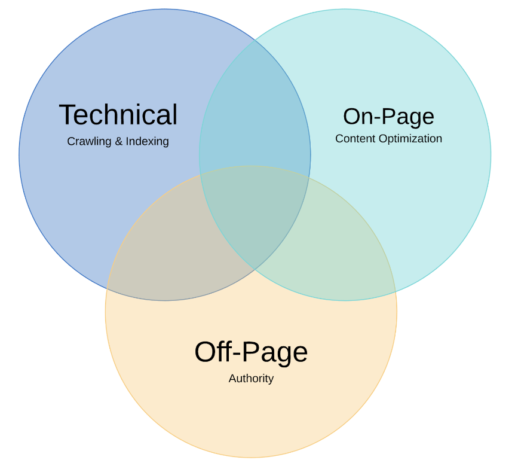

What is SEO?
Search Engine Optimization (SEO) is the process of improving the visibility and ranking of a website on search engines like Google. Below, we explore key aspects of mastering.
Explanation of SEO?
- Improving Visibility: SEO aims to increase how often your website appears in search engine results pages (SERPs) when users search for relevant keywords.
- Improving Ranking: SEO helps boost your website’s position in search results, with the goal of reaching the top positions on the first page for maximum visibility.
SEO Best Practices
Applying effective SEO techniques is crucial for optimizing your website and enhancing its search engine ranking. Here are some essential SEO best practices:
On-Page SEO
- Title Tags: Craft unique and descriptive title tags for each page that include relevant keywords.
- Meta Descriptions: Write compelling meta descriptions that entice users to click through from search results.
- Header Tags: Use header tags (H1, H2, H3) to structure your content and make it more readable for both users and search engines.
- Content Optimization: Ensure your content is relevant, engaging, and includes targeted keywords.
Off-Page SEO
- Backlinks: Acquire high-quality backlinks from reputable websites to enhance your site's authority.
- Social Media: Leverage social media platforms to promote your content and drive traffic to your website.

Technical SEO
Technical SEO focuses on improving the technical aspects of a website to enhance its visibility and performance in search engines. Key areas to consider include:
Website Speed
- Optimize Images: Compress images to reduce load times.
- Minify CSS and JavaScript: Remove unnecessary code to improve page speed.
Mobile-Friendliness
- Responsive Design: Ensure your website is optimized for various screen sizes and devices.
Crawlability and Indexing
- Sitemaps: Create and submit XML sitemaps to search engines.
- Robots.txt: Use robots.txt to guide search engine crawlers.